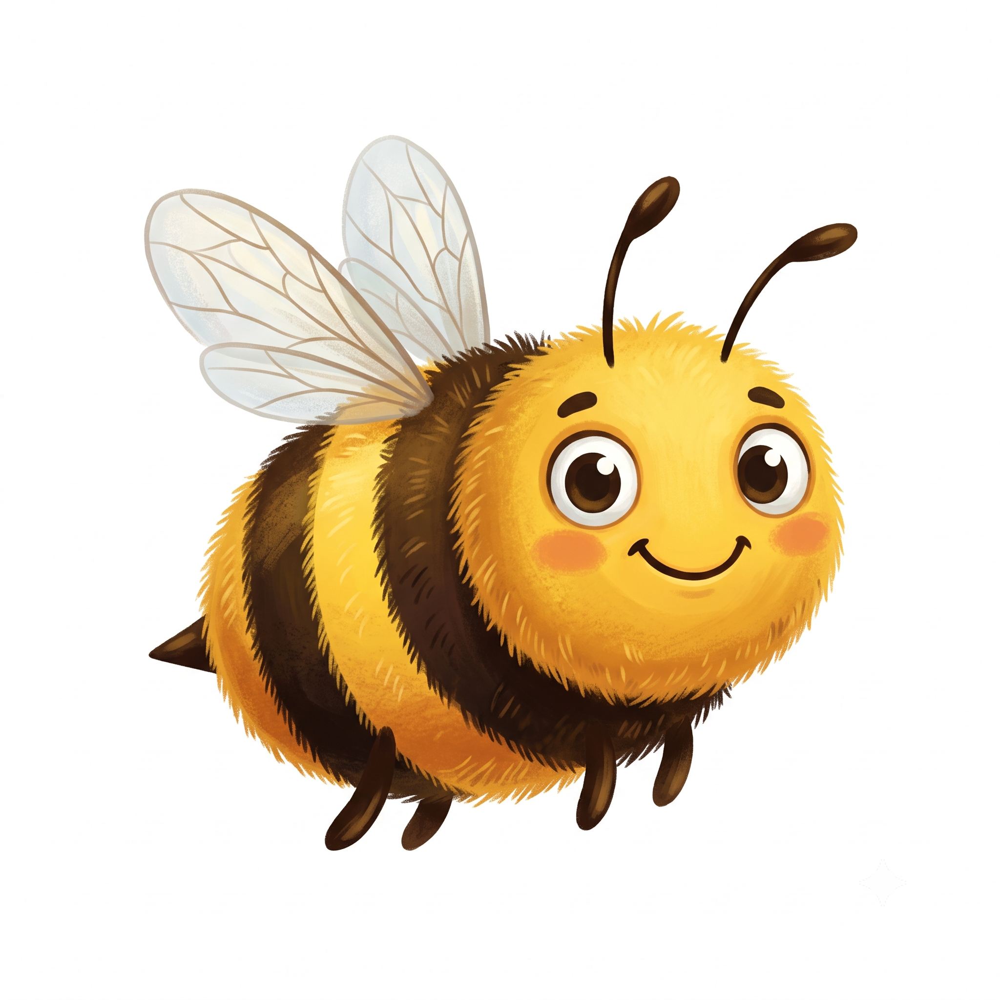

FIRST Canopy & BIOBUZZ
Robotlar ve doğa yan yana gelince ne olur? Takımımızın hikâyesi tam da burada başlıyor!

FIRST Tech Challenge Nedir?
FIRST Tech Challenge (FTC), dünyanın dört bir yanından gençlerin takımlar kurup kendi robotlarını tasarladığı, ürettiği ve programladığı büyük bir robotik yarışmasıdır. Her yıl yeni bir tema açıklanır ve takımlar o tema etrafında hem robot yapar hem de topluma faydalı projeler geliştirir.
Biz de FTC 24230 AG Robotik takımı olarak bu yolculuğun içindeyiz — hem robot yapıyor hem de doğayı anlatan bu dergiyi hazırlıyoruz!
BIOBUZZ Nedir?
BIOBUZZ, takımımızın doğa temalı projesi. Tıpkı bir arının çiçekten çiçeğe polen taşıması gibi, biz de teknolojiyle doğa sevgisini ve biyoçeşitlilik bilincini çocuklara taşıyoruz!

Neden Canopy?
Bu yıl bizi ağaçların tepe örtüsü (canopy) ilham verdi. Yağmur ormanlarının bu gizli katı, gezegenimizin en zengin yaşam alanlarından biri. İşte bu yüzden derginin kapak konusu da Canopy oldu — teknoloji ve doğa aynı dalda buluştu!
Robot tasarla & programla
Takım olarak çalış
Doğaya sahip çık
Öğren & paylaş
Robotları ve doğayı seviyorsan, sen de bir gün bir robotik takımında yer alabilirsin. Belki de doğayı koruyan yeni bir icat senden gelir! Merak et, üret, paylaş.
Doğadan İlham Alan Robotlar
Mühendisler robotları çoğu zaman doğadan öğrenir: arılardan uçan minik dronlar, kuşlardan hızlı uçaklar, kertenkelelerden duvara tırmanan robotlar, köpekbalığı derisinden sürtünmesi az yüzücü kıyafetleri, örümcek ağından çelikten güçlü ipler doğdu. Buna biyomimikri denir — yani "doğayı taklit etmek". Milyonlarca yıldır doğa en zor problemleri çözmüş; mühendisler de bu hazır çözümlerden ilham alıyor. Doğa, gezegenin en tecrübeli mühendisi! İşte tam da bu yüzden bir robotik takımının doğayı yakından tanıması çok değerli: daha iyi gözlemleyen, daha iyi mühendis olur. Biz de BIOBUZZ ile hem robot yapıyor hem de bu bağı çocuklara anlatıyoruz.